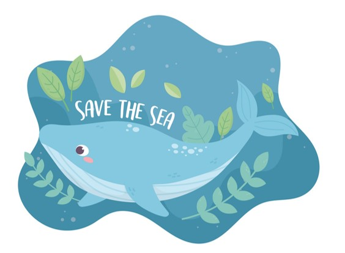

|  |
Save the SeaMade by Concord, Massachusetts Girls Who CodeStart from the bottom and get to the top! |
Girls Who Code Concord made this page with HTML and Scratch. This game shows that saving the oceans and environment is important. Thanks to Girls That Scuba for helping us with this project.
How to play: Visit the six levels of the ocean, which are: The Trenches, The Abyss, The Midnight Zone, The Twilight Zone, The Sunlight Zone, and finally, The Beach. There are included instructions in each game. Have fun playing all the levels and learn more about the oceans.
Saving the oceans are important because the oceans are a limited resouce. This game is to raise awareness, and even though it says that you saved the ocean, you didn’t. Here at Girls Who Code we made this game so that people could understand the effect of climate change on the ocean. Because of raising water temperatures, coral is starting to die off, or get ‘bleached’. Dolphins that are hunting fish can sometimes get caught is fishing nets meant for their prey. Whales can get entangled in left behind fishing nets called ‘ghost nets’ and drown. All of these are examples of the negative impact that humans can have on the ocean. There are links at the bottom of this page that direct you to organizations that are dedicated to saving the ocean.
As greenhouse gases trap more energy from the sun, the oceans are absorbing more heat, resulting in an increase in sea surface temperatures and rising sea level. Changes in ocean temperatures and currents brought about by climate change will lead to alterations in climate patterns around the world. Remember : one small person can make one big difference.
Visit Girls That Scuba!
Find out ways you can do to save the ocean!